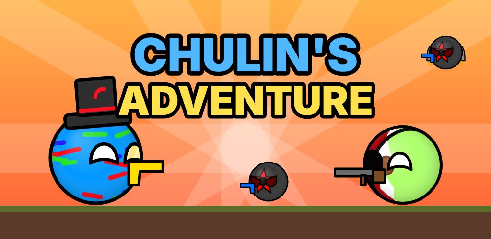
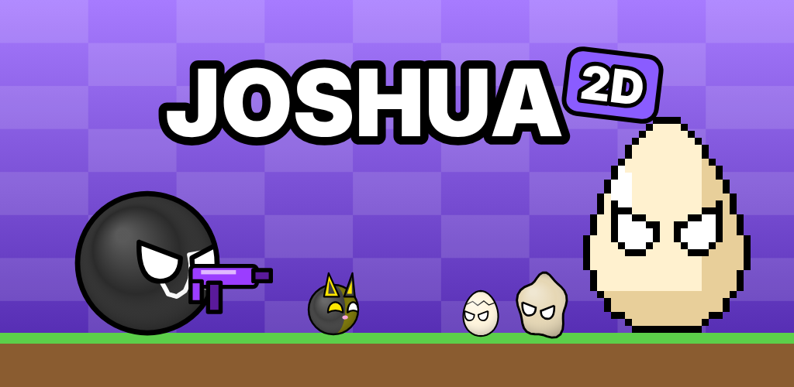
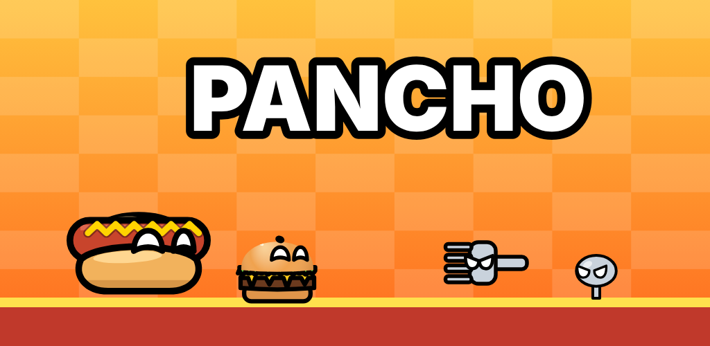
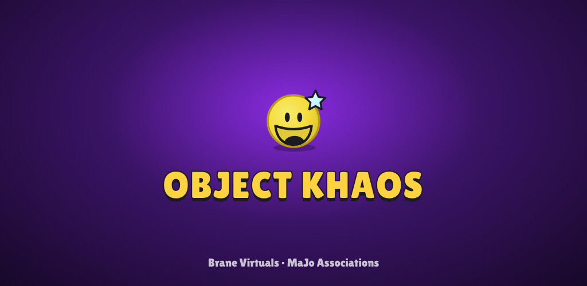
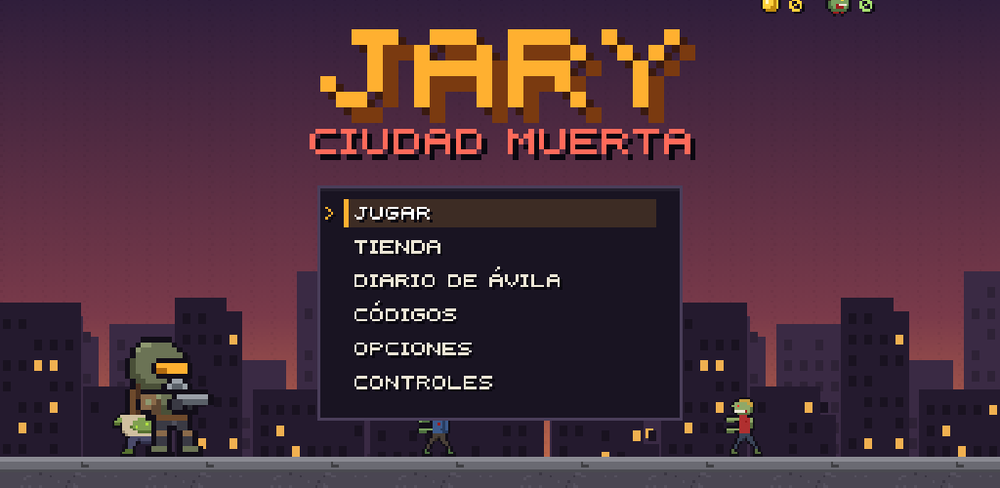
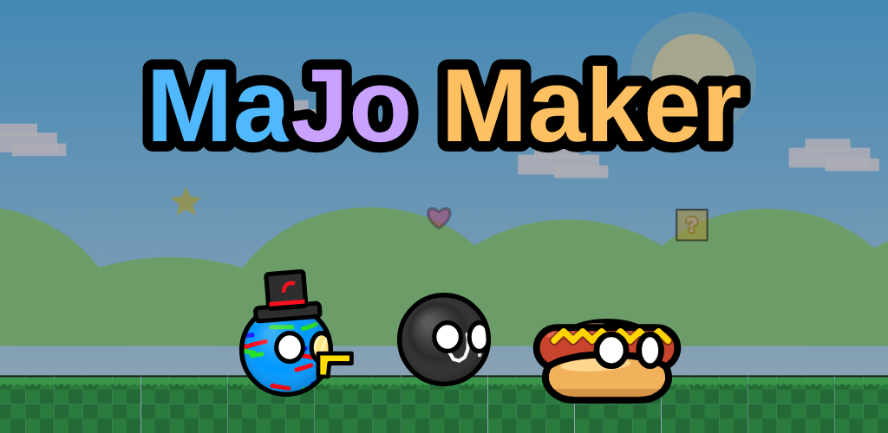

v1.0.6 Sulu Entertainment
Chulin's Adventure
Villa del Sol está en llamas. Chulin y su mejor amigo Mexicano cruzan 4 mundos y 20 niveles para detener al Imperialista y liberar a los aldeanos.
Paquete: com.chulin.majo
Hacemos juegos de plataformas con countryballs (y comidas que hablan), y herramientas útiles para moverte por tu ciudad.
Tres juegos de plataformas 2D para Android, PC y la web, en 13 idiomas, sin anuncios ni compras con dinero real, con logros en Google Play Games.

Villa del Sol está en llamas. Chulin y su mejor amigo Mexicano cruzan 4 mundos y 20 niveles para detener al Imperialista y liberar a los aldeanos.
Paquete: com.chulin.majo

MegaEGG, un huevo gigante en pixel art, secuestra a Purriau, el gato de Joshua. Planicies, Nieves, Desierto, Mundo Oscuro... y un final secreto.
Paquete: com.joshua2d.majo

Un pancho vegano del Fooworld despierta dentro del Foogame. 7 poderes, 20 niveles, una decisión difícil y dos finales.
Paquete: com.pancho.majo
Solo en la web: se juegan en el navegador, también en el celular.

Novela visual en la Academia MaJo: personajes de todos los juegos, muchísimas decisiones, un juicio de clase y 35 finales.

¡El concurso de los objetos! Señor Pantalla, Isla Escenario y 20 minijuegos. En la web se juega sin conexión, contra bots.

Jary, su armadura apocalíptica y una ciudad tomada por zombis. Ávila, el diario de 20 páginas y la Segunda Aventura secreta.

El editor de niveles de los tres juegos: activadores, equivalencias, NPCs con diálogos y niveles para compartir.
Colectucus es nuestra web de rutas y tarifas de los colectivos de Tucumán. Buscá cómo llegar desde un barrio, un lugar, una calle o una esquina.
Colectucus es un proyecto ciudadano independiente y sin fines de lucro: no representa a ninguna entidad pública ni a las empresas de transporte.
| Qué | Estado |
|---|---|
| Web de Colectucus (Tucumán) · colectucus.com.ar | Disponible |
| Otras 17 provincias · bondisar.com.ar | Disponible |
| App Bondis-AR para Android | Disponible |
MaJo viene de Manda y Joshua. MaJo Associations es el grupo detrás de todos nuestros proyectos, y trabaja a través de sus subsidiarias:
El estudio de Chulin's Adventure. También firma MaJo Maker junto a Brane Virtuals.
El estudio de Joshua 2D y Pancho.
Nuestro proyecto de transporte: la web de colectivos de Tucumán, y en el futuro, de más provincias.
Nuestros juegos no recopilan datos personales por su cuenta: el progreso se guarda en tu teléfono, y solo los logros de Google Play Games pasan por tu cuenta de Google. Estas son las políticas para Google Play: